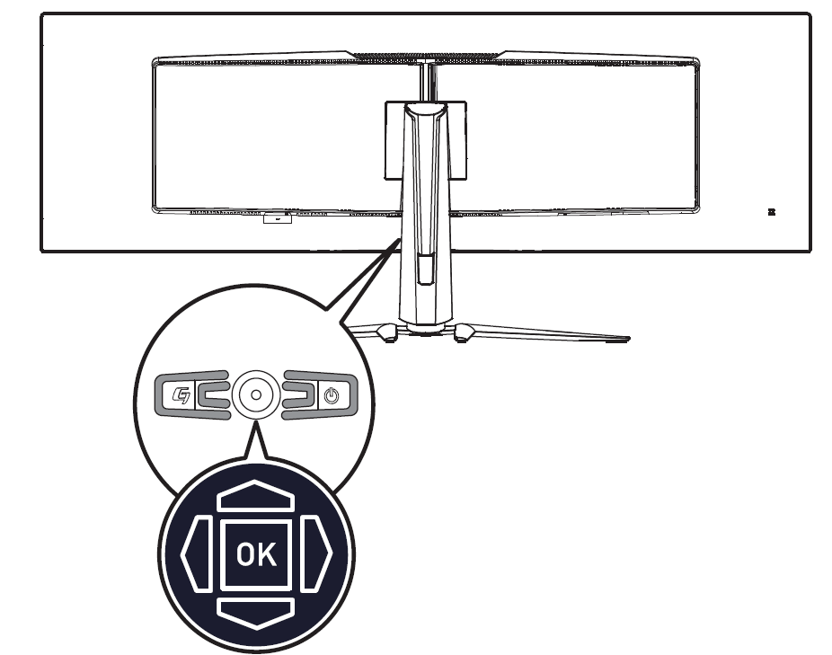

OSD Setup
This chapter provides you with essential information on OSD Setup.
warning Important
All information is subject to change without prior notice.
Navi Key
The monitor comes with a Navi Key, a multi-directional control that helps navigate the On-Screen Display (OSD) menu.
Up/Down/Left/Right:
- selecting function menus and items
- adjusting function values
- entering into/exiting from function menus
Press (OK):
- launching the On-Screen Display (OSD)
- entering submenus
- confirming a selection or setting
Hot Key
- Users may enter into preset function menus by moving the Navi Key up, down, left or right when the OSD menu is inactive.
- Users may customize their own Hot Keys to enter into different function menus.